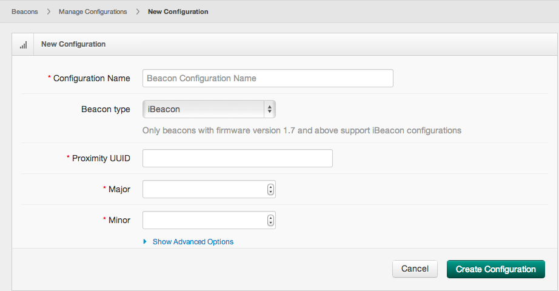
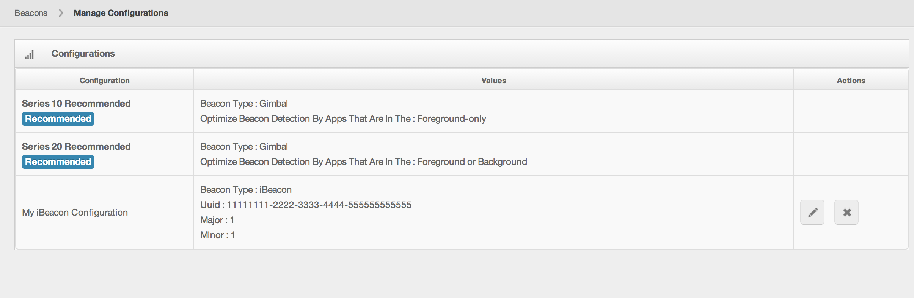
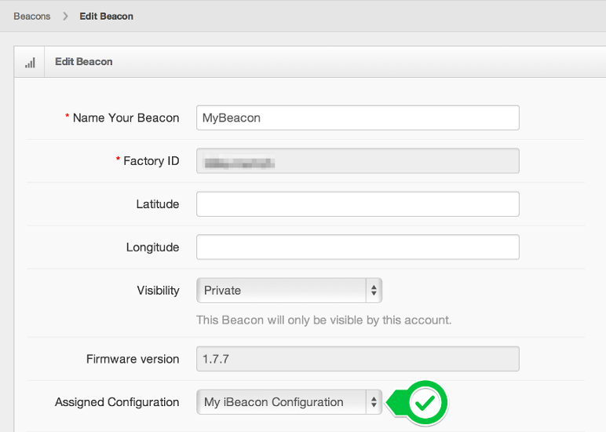
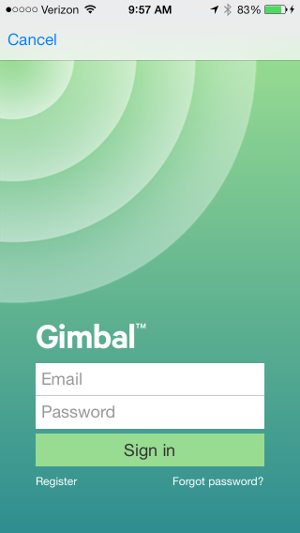
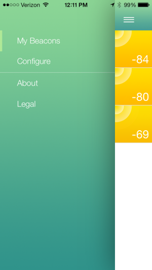
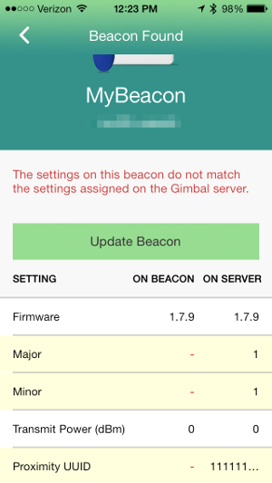
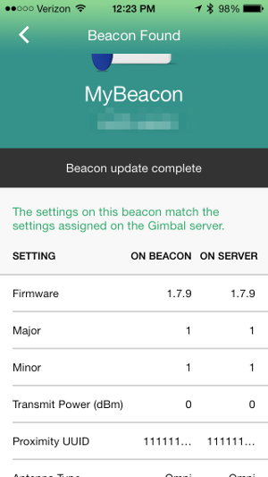

Get Gimbal iBeacons up and running in your iOS App.
This guide builds upon the Proximity Quick Start guide. It is highly recommended to complete the Proximity Quick Start guide first before continuing.
All Gimbal iBeacons will be managed by the Gimbal Manager. To create a configuration, login to the manager and navigate to Proximity > Beacons > Manage Configurations > New Configuration. To indicate that you want to create an iBeacon configuration change the Beacon Type to 'iBeacon' and fill in required fields to produce a form similar to this:

Warning Changing any values under the Advanced Options may prevent your beacon from being sighted by an iOS device. Only change the values if you fully understand the side effects they may have on the beacon.
Click 'Create Configuration' to complete the process and you should see 'My iBeacon Configuration' in your configuration list.

Once you have created an iBeacon configuration you can apply the configuration to a beacon. Applying a configuration indicates to the server that you want to push that configuration to the specified beacon when possible. To do so navigate to Proximity > Beacons and edit a beacon.

In order to push configurations to beacon you must use the Gimbal Beacon Manager application that can be found in the Apple App Store here. Open the Gimbal Beacon Manager application and log in using your Gimbal Manager credentials.

Once logged in hit the settings button to reveal the settings menu. Click on the "Configure" menu option.

Follow the directions on the screen and remove all batteries from you Gimbal Series 20 Beacon and then re-insert the batteries. This places the beacon in a configurable mode and the application will be able to push your configuration. When connected to the beacon you should see something like the following.

Notice that the configuration on the beacon does not match the configuration indicated from the Server. Push the update button to apply your configuration.

Your beacon is now broadcasting iBeacon compatible packets. Now let's update your application code to sight the beacon.
Just like you previously initialized the FYXVisitManager with a delegate for Gimbal beacons, we will need to set a FYXiBeaconVisitDelegate as well. Your code should now look like this.
#import <FYX/FYXVisitManager.h>
...
@property (nonatomic) FYXVisitManager *visitManager;
...
self.visitManager = [FYXVisitManager new];
self.visitManager.delegate = self;
self.visitManager.iBeaconDelegate = self;
[self.visitManager start];
The FYXiBeaconVisitDelegate has a very similar interface to the FYXVisitDelegate but altered to accommodate the iBeacon properties. To receive sightings you must add the <FYXiBeaconVisitDelegate> protocol to your class and set the delegate on your FYXVisitManager object. Implement the delegate as below:
#import <FYX/FYXVisitManager.h>
#import <FYX/FYXiBeacon.h>
...
- (void)didArriveIBeacon:(FYXiBeaconVisit *)visit;
{
// this will be invoked when a Gimbal managed iBeacon is sighted for the first time
NSLog(@"I arrived at a Gimbal iBeacon!!! Proximity UUID:%@ Major:%@ Minor:%@", visit.iBeacon.uuid, visit.iBeacon.major, visit.iBeacon.minor);
}
- (void)receivedIBeaconSighting:(FYXiBeaconVisit *)visit updateTime:(NSDate *)updateTime RSSI:(NSNumber *)RSSI;
{
// this will be invoked when a Gimbal managed iBeacon is sighted during an on-going visit
NSLog(@"I received a sighting!!! Proximity UUID:%@ Major:%@ Minor:%@", visit.iBeacon.uuid, visit.iBeacon.major, visit.iBeacon.minor);
}
- (void)didDepartIBeacon:(FYXiBeaconVisit *)visit;
{
// this will be invoked when a Gimbal managed iBeacon has not been sighted for some time
NSLog(@"I left the proximity of a Gimbal Beacon!!!! Proximity UUID:%@ Major:%@ Minor:%@", visit.iBeacon.uuid, visit.iBeacon.major, visit.iBeacon.minor);
NSLog(@"I was around the beacon for %f seconds", visit.dwellTime);
}
There is a known issue with the current release of the SDK in which an application only listens for the iBeacons which are in your Gimbal Manager Portal at the time of installation (first launch). Any iBeacon configurations created after first launch will not immediately be sighted by the SDK. For testing purposes it is best to uninstall and reinstall the application after creating new iBeacon configurations.
You have now successfully created an iBeacon configuration, applied and pushed the configuration to a beacon and written an application that can detect your beacon. When installing the application you should see the following.
2014-01-21 17:15:43.958 MyProduct[1137:60b] I arrived at a Gimbal iBeacon!!! Proximity UUID:11111111-2222-3333-4444-555555555555 Major:1 Minor:1
2014-01-21 17:15:44.957 MyProduct[1137:60b] I received a sighting!!! Proximity UUID:11111111-2222-3333-4444-555555555555 Major:1 Minor:1
2014-01-21 17:16:06.903 MyProduct[1137:4703] I left the proximity of a Gimbal Beacon!!!! Proximity UUID:11111111-2222-3333-4444-555555555555 Major:1 Minor:1
2014-01-21 17:16:06.905 MyProduct[1137:4703] I was around the beacon for 11.000249 seconds
For additional details on how to leverage the SDK functionality, refer to the sample applications and documentation included in the zip file provided.